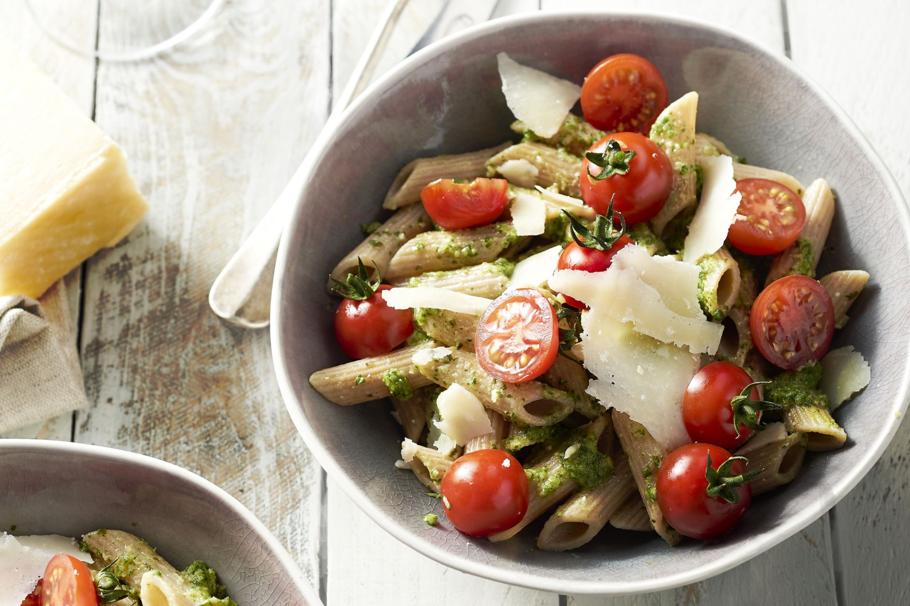

Pasta met Kerstomaatjes
Pasta gremolata met ricotta
Supersnelle pasta met kerstomaatjes
Chorizo met ei

Ingredienten
tagliatelle 100 g
kerstomaat ¼ bakje
tomatenblokjes (in blik)
parmezaan
olijfolie ½ el
knoflook ¼ teentje
gedroogde aregano ¼ tl
basilicum
gedroogde tijm ¼ tl
sjalot ¼
peper
zout